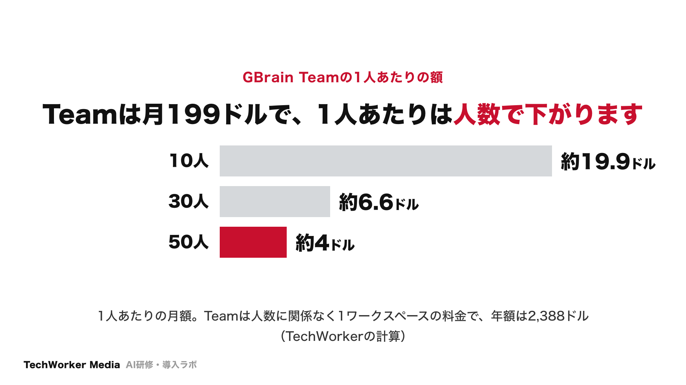
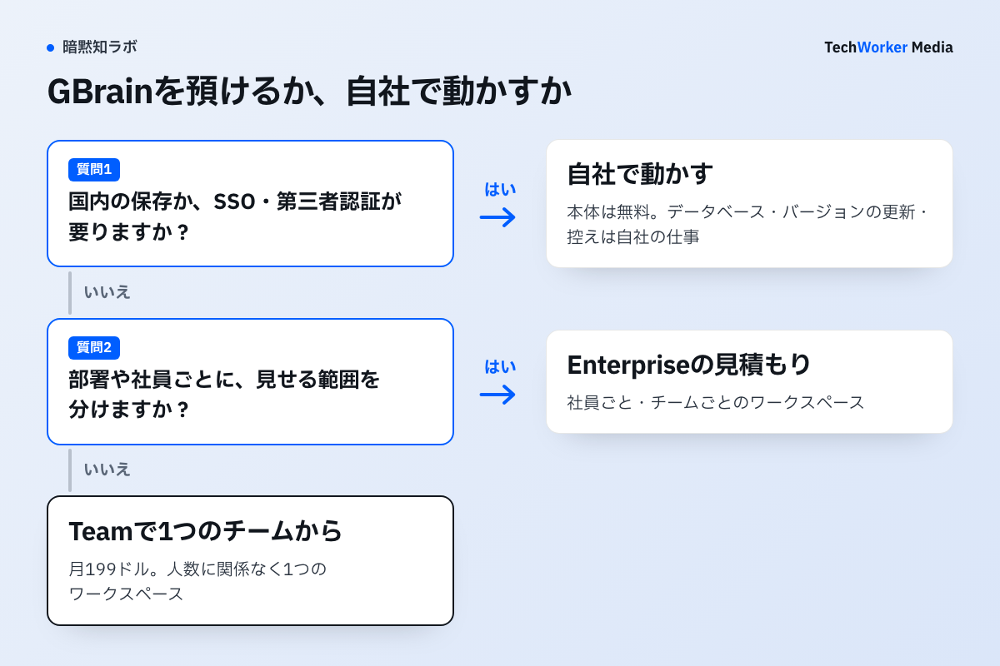
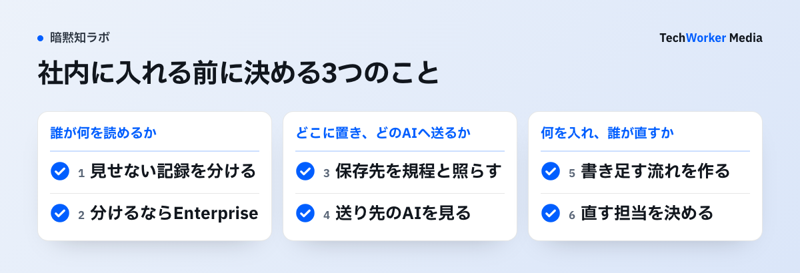

Company Brain（会社の記憶）は、社内のメモ、議事録、決めたことを1か所にため、社員が使うAIが答える前に読む仕組みを指す言葉です。2026年に入り、海外のAI製品の説明でよく見かけるようになりました。
- 代表例：Y CombinatorのGarry Tan氏が公開したオープンソースのGBrainです。GitHubのスターは約3.3万です（2026年11月19日）。
- 料金：ホスト版（gbrain.io）はPersonalが月49ドル、Teamが月199ドルです。Teamは人数に関係なく1ワークスペースの料金です。
- 確かめる点：ホスト版の保存先は米国シカゴで、SSO（シングルサインオン）は予定の段階です。日本語への対応を明記した記載はありません。
公式情報（2026年11月19日確認）と、GBrainを社内で動かしているTechWorkerの記録をもとに、料金と費用、日本語の検索、社内に入れる前に決めることをまとめます。
Company Brain（会社の記憶）とは、何ですか？
社内の記録を1か所にため、社員が使うどのAIも答える前にそこを読む仕組みです。決まった定義はなく、製品によって指す範囲が違います。
GBrainのGitHubのページは、冒頭で自らを次のように説明しています。
原文“One brain for you and your company, read by every agent you use. […] Claude Code, Codex and your other agents look there before they answer, so they stop starting from zero and work from what you and your team actually wrote down.”
日本語訳あなたと会社のための1つの記憶を、使うすべてのエージェントが読みます。（中略）Claude CodeやCodexなどのエージェントは答える前にそこを見るので、毎回ゼロから始めずに、あなたとチームが実際に書き残したことをもとに仕事をします。
ここでのエージェントは、指示を受けて調べ物や作業を進めるAIのことです。会社の記憶があると、AIに毎回社内の事情を説明し直す手間が減ります。
似た仕組みに社内検索（エンタープライズサーチ）があります。社内検索は今ある文書を探して見せます。会社の記憶は会話や議事録から事実や決めたことを書き足し、古い内容を退けていく点が違います。GBrainのホスト版はこの手入れをTeamとEnterpriseの料金に含めています。
言葉の使い方はまだそろっていません。Tsuguviは自社を「A company brain」と名乗り、データ連携のMergeは、人とAIのツールが使う、組織の知識とつながりの共有の層だと説明しています。製品を比べるときは、名前でなく、何を入れ、誰が直し、どのAIが読むかで比べます。
GBrainは、何をする道具ですか？
Markdownのメモと社内の文書をデータベースに入れ、語と意味の両方で探せるようにする道具です。Claude Code、ChatGPT、CursorなどのAIから、MCPという接続の決まりでつなぎます。
元になる情報はMarkdown（見出しや箇条書きを記号で書く文書の形式）のファイルです。READMEはデータベースをファイルから作り直せる索引と位置づけています。
- データベース：1人で使うなら標準のPGLite（約5万ページまで）、共有や大きな量ならPostgresにpgvectorを足して使います。
- 検索：語で探す検索と、文の意味で探す検索を組み合わせます。意味で探すには、文を数値に変える埋め込み（embedding）のAPIが要ります。
- ライセンス：MITライセンスで、試験版を除く最新のバージョンはv0.60.739.0（2026年11月18日）です。
APIのキーが無くても始められます。その場合、検索は語で探す方だけになります。
GBrainの料金は、いくらですか？
ホスト版はPersonalが月49ドル、Teamが月199ドル、Enterpriseは個別見積もりです。Teamは人数に関係なく1ワークスペースの料金で、AIのクレジットが月100ドル分含まれます。
| プラン | 月額 | 主な中身 |
|---|---|---|
| Personal | 49ドル | 1人用。メモ・スキル・アプリを、今使っているAIから使う |
| Team | 199ドル | チーム全員で1つのワークスペース（人数による追加料金なし）。AIのクレジット月100ドル。記憶の手入れ（事実の抜き出し、古い内容の退避）を含む |
| Enterprise | 個別見積もり | 社員ごと・チームごとのワークスペース、全チームを1画面で見る機能、社外のゲスト、請求の一本化 |
出典：gbrain.io「Pricing」「FAQ」（2026年11月19日確認）。PersonalとTeamは月払いで、いつでも止められます
月100ドルのクレジットは、ワークスペースが使うAIのモデルと、Web検索などの従量の道具に使われます。FAQには、1人の接続をその人が使うすべてのAIで使えるTools（月19ドル、最初の7日は無料）も載っています。料金ページの3つのプランとは別の商品です。
人数に関係なく月199ドルなので、1人あたりの額は人数で変わります。ここからはTechWorkerの計算です。10人なら1人月約19.9ドル、30人なら約6.6ドル、50人なら約4ドルです。年額にすると2,388ドルになります。

ただしTeamは全員で1つのワークスペースを使います。部署ごとに見せる範囲を分けたい会社は、Enterpriseの見積もりを前提に比べます。
AIのツールを1人ずつ配る費用は、生成AIの法人契約の比較にまとめています。主要4社の料金比較表と、稟議書・社内利用ルールの雛形は、下の枠から受け取れます。
自社で動かすと、何に費用と手間がかかりますか？
本体は無料ですが、データベース、埋め込みのAPI、常に動かすサーバーの費用がかかります。公式は月額の目安を出していません。
READMEに書かれている費用のかかる所は次の4つです。
- データベース：共有して使うなら、Postgresとpgvectorを自社のサーバーかクラウドで用意します。
- 埋め込み：新しく入れたときの既定はVoyageのモデルです。OpenAI、Google Gemini、手元で動くモデルなども選べます。
- 答えを作るAI：出典つきの答えを作る機能には、別にAIのモデルのAPIが要ります。
- 常に動かすサーバー：夜間の整理などを常に動かすなら、メモリ8GB以上のサーバーとAPIの利用料がかかります。
TechWorkerは2026年6月から、社内の記憶としてGBrainを共有のデータベース（Postgres＋pgvector）で動かしています。2026年11月19日の時点で4,277ページ、26,804の断片、6,960のつながりが入っています。断片はすべて埋め込み済みです。約4,250ページの時点で、データベースは約900MBでした。
運用して分かったことが2つあります。1つは、日本語の意味検索のために、多言語の埋め込みモデル（bge-m3）を選んだことです。もう1つは、バージョンの更新です。
2026年11月14日に新しいバージョンへ上げたところ、無料の最小構成のデータベースでは検索に47〜187秒かかりました。その日のうちに元のバージョンへ戻しました。バージョンを上げるときは、データベースの移行と埋め込みの作り直しが要ることがあります。本番の前に、写しの環境で試します。
日本の会社がホスト版を使うとき、何を確かめますか？
保存先は米国シカゴで、SSO・SCIM（社員の情報を自動で同期する仕組み）は予定の段階です。SOC 2などの第三者認証もまだありません。
原文“We do not offer SSO/SAML or SCIM provisioning today. Both are planned.”
日本語訳SSO・SAMLとSCIMによる利用者の登録は、今は提供していません。どちらも予定しています。
| 確かめる点 | 公式の記載（2026年11月19日確認） |
|---|---|
| 保存先 | サーバーと各ブレインの計算機は、米国シカゴ（Fly.io） |
| AIへの送信 | 既定で、モデルはAnthropic、意味検索の埋め込みはOpenAI、Web検索はExa、Webページの取得はFirecrawl。OpenAIの窓口は地域を固定しない。管理者は自社のAIの窓口を足せる |
| 学習への利用 | チームの中身をAIの学習に使わない。売らない。宣伝に使わない |
| ログイン | Googleのアカウントか、メールで届くリンクでログインする。SSO・SAML・SCIMは予定 |
| 第三者認証 | SOC 2・ISO 27001などは持っていない |
| 削除と控え | ブレインの削除は元に戻せない。日次の控えは最大9日残る（保持期間を読めない控えは最大62日） |
| 持ち出し | メモはMarkdownのファイル。管理者はワークスペースのデータを書き出せる |
| 日本語 | 料金ページ・FAQ・READMEに、対応を明記した記載はない。検索の手引きに日本語・中国語・韓国語の扱いがある |
出典：gbrain.io「Security」「Privacy」「Subprocessors」「FAQ」（2026年11月19日確認）
国内の保存やSSOを社内の審査の条件にしている会社は、今のホスト版では条件を満たせません。自社で動かすか、条件がそろうのを待つかの判断になります。
日本語の資料で、検索は効きますか？
意味で探す検索は言語を問わないと手引きにあり、TechWorkerでは多言語のモデル（bge-m3）で日本語でも動いています。語で探す検索は、今のバージョンでは索引を使わず全文を順に照らすため、量が増えるほど遅くなります。
GBrainの多言語の手引きは日本語を含む問いの語の検索について、次のように書いています。
原文“The fallback is correct but not index-accelerated: it scans content_chunks.chunk_text, so latency grows with corpus size.”
日本語訳この代わりの探し方は正しく動きますが、索引で速くはなりません。断片の本文を順に照らすため、量が増えるほど時間がかかります。
同じ手引きによると、日本語用の拡張（PGroongaなど）をデータベースに入れても、今はこの探し方になります。語と意味を組み合わせた検索では、語の側に既定で3秒の時間の枠があります。超えると候補を2,000の断片までに絞って探し直すため、語の側の結果がすべてそろわないことがあります。
TechWorkerは2026年11月18日に、10万ページの試験データで、日本語の語の検索を速くする索引を比べました。データベースで直接測った結果です。
| 探した語 | 索引なし | pg_trgm | pg_bigm | PGroonga |
|---|---|---|---|---|
| 「条項」（2文字・3ページだけに出る語） | 76ミリ秒 | 77ミリ秒 | 5ミリ秒 | 6ミリ秒 |
| 「承認」（2文字・約5%のページに出る語） | 91ミリ秒 | 91ミリ秒 | 26ミリ秒 | 45ミリ秒 |
出典：TechWorkerの試験（2026年11月18日、10万ページの日本語の試験データ）。GBrainの検索を通さず、データベースで直接測った値
この2つの語では、pg_bigmとPGroongaは速くなり、pg_trgmは索引なしと変わりませんでした。ただし今のGBrainはこれらの索引を日本語の検索に使いません。速さが要る会社は、導入の前に社内の言葉で試します。製品名や略語、部署の言い方など、社内の言葉で10問ほど試すと、語と意味のどちらで見つかるかが分かります。
預けるか、自社で動かすか、どう決めますか？
国内の保存かSSO・第三者認証が要るかで決まります。どちらかが要るなら、今は自社で動かす形になります。

要らない会社はTeamで1つのチームから試せます。部署や社員ごとに分けたいなら、Enterpriseの見積もりを取ります。
自社で動かすと、データベースの用意、バージョンの更新、控えの取得が自社の仕事になります。担当の人を決められないうちは、預ける形で小さく始める方が進めやすくなります。
社内に入れる前に、何を決めますか？
誰が何を読めるか（権限）、どこに置きどのAIへ送るか（置き場所）、何を入れて誰が直すか（中身）の3つです。

- 誰が何を読めるか：Teamは全員で1つのワークスペースです。人事や役員の記録など、全員に見せない情報は入れないか、Enterpriseで社員ごと・チームごとのワークスペースに分けます。
- どこに置き、どのAIへ送るか：保存先と、文が送られるAIの会社（既定でモデルはAnthropic、埋め込みはOpenAI、Web検索はExa）を、社内の規程と照らします。顧客の情報を入れるなら、契約で決めた保存先と合うかを確かめます。
- 何を入れ、誰が直すか：入れ物だけ用意しても、AIの答えは変わりません。議事録や決めたことを書き足す流れを先に作ります。AIが聞き違えて書いた内容も、次の答えに使われます。直す担当を決め、出典を残します。
GBrainの公式も外から読み込んだ内容に、AIへの指示を書き換える文が混じる危険を書いています。そのうえで、ブレインの出力を判断の出発点として扱い、正しいものとして扱わないよう勧めています。
原文“Treat brain output as a starting point that informs your judgment, not as authoritative.”
日本語訳ブレインの出力は、判断の材料になる出発点として扱い、確かなものとして扱わないでください。
稟議で聞かれることに、どう答えますか？
費用、保存先、AIの学習、ログイン、やめるときの扱いを表にしておくと答えやすくなります。ホスト版と自社で動かす場合で答えが変わります。
| 聞かれること | ホスト版（gbrain.io） | 自社で動かす |
|---|---|---|
| 費用 | Team 月199ドル（年2,388ドル）。人数に関係なし | 本体は無料。データベース・埋め込み・サーバーは別 |
| 保存先 | 米国シカゴ | 自社で選ぶ（国内のクラウドも可） |
| AIの学習 | 使わないと公式に記載。送り先のAIは各社の規定による | 送り先のAIの規定による。手元で動くモデルも選べる |
| ログイン | Googleのアカウントかメールのリンク。SSOは予定 | 自社の環境に合わせて用意する |
| やめるとき | Markdownで持ち出せる。削除は戻せず、控えは原則最大9日 | 自社で消す。ファイルは手元に残る |
出典：gbrain.io「Pricing」「FAQ」「Security」「Privacy」、GitHub「garrytan/gbrain」README（2026年11月19日確認）。年額はTechWorkerの計算
稟議では試す範囲も1行で書きます。1つのチームで1か月、社内の言葉で10問試し、答えに出典が付くかを見る、のように書くと判断しやすくなります。
AIに渡す入力が増えると費用も変わります。単価と計算はトークンコストとは、使用量の記録の仕方はトークンマキシングとはで説明しています。記録を毎晩整理する流れは会社の記憶をAIが毎晩整理するの業務図にまとめました。
よくある質問
社内検索は今ある文書を探して見せる仕組みです。会社の記憶は会話や議事録から事実や決めたことを書き足し、古くなった内容を退けて、AIが答える前に読みます。GBrainのホスト版はTeamとEnterpriseでこの手入れを料金に含めています。
公式の料金ページ、FAQ、READMEに、日本語への対応を明記した記載はありません。検索の手引きには、日本語・中国語・韓国語の扱いが書かれています。TechWorkerでは多言語の埋め込みモデル（bge-m3）を選び、意味で探す機能が日本語でも動いています。語で探す機能は、今のバージョンでは索引を使わない探し方になり、量が増えると遅くなります。
本体はMITライセンスで、自社で動かすのは無料です。データベース、埋め込みのAPI、常に動かすサーバーの費用は別にかかります。ホスト版の料金ページに無料試用の記載はありません。プライバシーの規定には、支払いのないまま無料試用を終えたワークスペースは、日付を知らせるメールから5日後に削除すると書かれています。条件は申し込みの画面で確かめます。
ホスト版の公式FAQはチームの中身をAIの学習に使わず、売らず、宣伝にも使わないと書いています。ただし既定で、文はAnthropic（モデル）とOpenAI（埋め込み）に、Web検索の語はExaに送られ、その先は各社の規定に従います。
メモはMarkdownのファイルで持ち出せます。解約は支払った期間の終わりまで有効です。ブレインを削除すると元に戻せず、日次の控えが最大9日残ります（控えの保持期間を読めない場合は最大62日）。支払いの終わったワークスペースは12か月後に削除するとされていますが、公式はまだ実施していないと書いています。
次の一歩は何から始めればよいですか？
AIに読ませてよい記録と、読ませない記録を分けることから始めます。
- 議事録や決めたことのうち、AIに読ませてよい物と読ませない物を分けます。
- 保存先、送り先のAI、ログインの3点を、情報セキュリティの担当と確かめます。
- 1つのチームで、社内の言葉で10問試します。
TechWorkerでは生成AIの研修を、受講者の実際の業務1本から組みます。30分の点検は画面共有で無料で行い、IDやパスワードは預かりません。30日後に、使った人の割合と1件の時間を測って報告します。検討段階のご相談だけでも歓迎です。
出典と確認範囲
確認日：2026年11月19日。ホスト版（gbrain.io）の画面と動きは、TechWorkerでは確かめていません。運用の数と日本語の索引の測定はTechWorkerの社内の記録で、環境によって結果は変わります。1人あたりの額と年額はTechWorkerの計算です。料金と条件は変わるため、契約の時点で公式情報を確認してください。